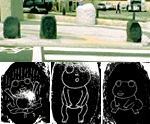
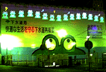
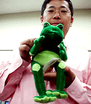

福岡に謎のカエル・ストーンサークル！ 【福岡発=らぁめん大魔王様】わたしは「らぁめん大魔王のズルズル日記」というページを作成している者です。実はらぁめん大魔王という名前はげこげこ大王様の名前をぱくらせて頂きました。人気が出るにつれ、なにか大王様に恩返しをすべきだと考えていまして、今回投稿しました。
場所は南区野間大池の交差点そばです。なぜかここには数体のかえるの石造（？？）があります。漫画的なカエルがなかなかかわいらしいとは思いませんか？ 【全国かえる奉賛会】福岡市長は、カエルをキャラクターに当選した方だけあって、その市長の指導の下で？？（非カエラーだった前任市長からの継続事業かもしれないけど）福岡市内の公園にも、カエルをテーマにした造形が着々と増殖しているのだが、野間大池に出現したカエル３態を刻んだストーンサークルにはびっくりした。  秋葉原駅カエル壁画の撮影成功！【東京発=しげこどうせなら同志よりも家来とよばれたい】JR秋葉原駅前に出現した工事現場の巨大カエル壁画を、撮影しました。 全国のカエラーのために、撮影ポイントを紹介します。 JR秋葉原駅１、２番ホームから撮影；かえるたちが美しい夜景をつくってますね。このポジションがいちばん全景が良く見えるのです。駅のホームに向かって電車の乗客にアピールしまくってます。
東京都のマークと下水道局の文字がわかるでしょうか？そう、これは壁画というか下水道工事の囲いなのでした。昼間は工事の車が出入りしたりしてます。昼間はこのかえるたち白っぽく見えるので、おそらく夜光塗料が塗ってあって、ブラックライトかなんかをあてているのでは？
 カエルのフィリップ君ゲット！【福岡発=しげやん同志記者】9月27日号で紹介した、ボストン美術館のカエルキャラクター『フィリップ』君をゲットしました。日銀クイズにカエルが進出！【福岡発=しげやん同志記者】ついに日銀にまで進出です。カエル君の案内で、クイズに答えてホワイトボードをゲットしたいです。アリーmyラブ２にカエルキャラ！【福岡発=ぴのこ同志記者】NHKであってる「アリーmyラブ」みてますか？第２シリーズからの新キャラにカエルくんがでるんですよ。けっこうリアル系で予告で見たときは超かわいかったです。
【日本発=kei-f同志記者】NHKで放映されている『アリー・my・ラブ２』で第５話からカエルのキャラクターが登場するらしいのです。 カエルブンゲイが創刊、投稿募集中！【福岡発=トミカ様】カエルブンゲイが創刊されました。このカエルビジュアルが気になります。ただの文芸小冊子みたいだけど。全国のカエラーは投稿せよ！【全国かえる奉賛会】トミカ様の情報でさっそくカエルブンゲイを見学すると『カエルとわたし』というテーマで、投稿を募集していた。さあ、全国のカエラーよ、カエルブンゲイにでかけて、得意のテーマで怒涛の投稿をしよう！投稿する際の所属部屋は、もちろん『全国かえる奉賛会』にしとこーねーっ！！全国同志の入選報告を待つ！！投稿採用者に武功カエル徽章を授与！ |
かえる古新聞過去に取り上げた記事を見出し付きで一覧したい人は、ここをクリック◆創刊号を見る◆先週号を見る◆話題の号を見る◆かえる新聞の昔を読む
|
私も入っています。。全国かえる奉賛会
大王様に会うには、このバナーをクリック。ずっと奥に写真館があるぞ。全国かえる奉賛会に入会するには、自分のホームページのどこかに、下の部分を追加するとバナーがリンク付きで表示されるぞ。どんどん入会しましょー |


|